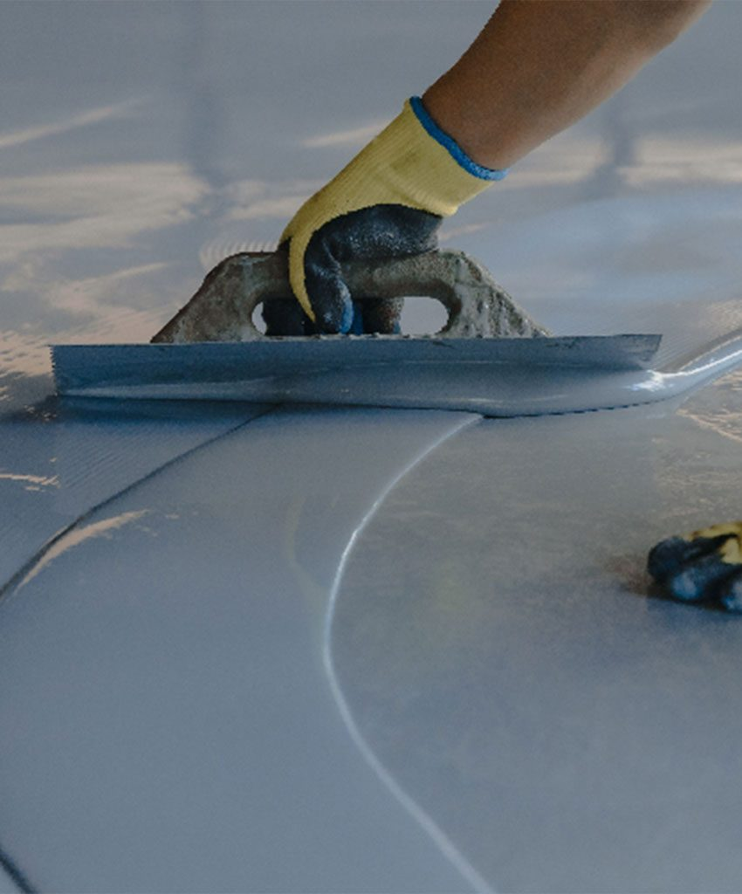
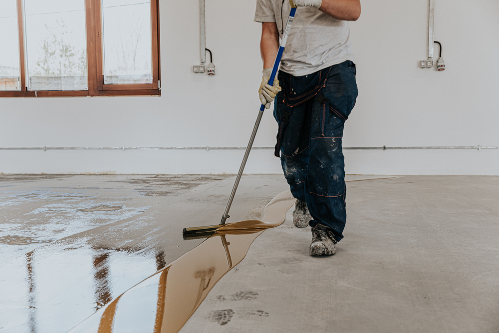

<section id="about-us" class="md:max-w-6xl mx-auto">
  <div class="flex flex-col items-center md:pt-6 justify-center md:flex-row ">
<div class="px-6 md:p-6 md:w-2/5 flex md:flex-col md:relative">
  

  
</div>

    <div class="flex flex-col mt-0 md:mt-4 pb-5 md:p-5 gap-3 md:gap-2 items-center justify-center md:w-1/2">
      <span class="text-sm text-blue-600 font-semibold">About Us</span>
      <div class="text-3xl font-bold text-[#0E2B5C] text-center px-4">
        Revolutionizing Floor Coatings for Over 13 Years
      </div>
      <div class="text-sm leading-relaxed text-center text-[#7E8A96] px-6">
        Welcome to Floor Tech, a pioneering force in the realm of floor coatings with a legacy that spans over 13 years. Our journey began in 2003 with a visionary approach to revolutionize the chemistry of urethanes, epoxies, and hybrid polymers, laying the foundation for the evolution of floor coatings.<br /><br />
        From the outset, Floor Tech has been at the forefront of innovation, introducing a spectrum of flooring solutions that harness the power of polymer technology. We embarked on this journey with polyurethane coatings and expanded our horizons to unveil Floorings Unlimited, a comprehensive range based on epoxy, epu, PU, and polyurea. This infusion of versatility and performance has enabled us to dominate the landscape of floor toppings in the country.
      </div>
            <div class="text-white flex flex-col items-center w-1/3 bg-blue-900 p-6 mt-4 justify-center border-4 border-white text-2xl"><span class="text-5xl font-extrabold">13</span><span>Years</span></div>
   </div>
  </div>
</section>